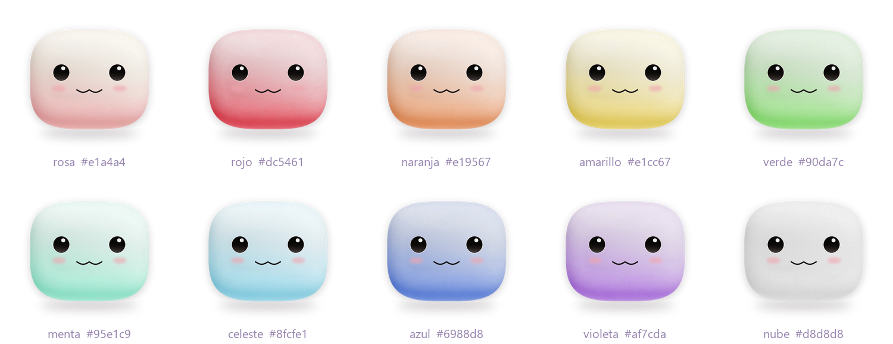
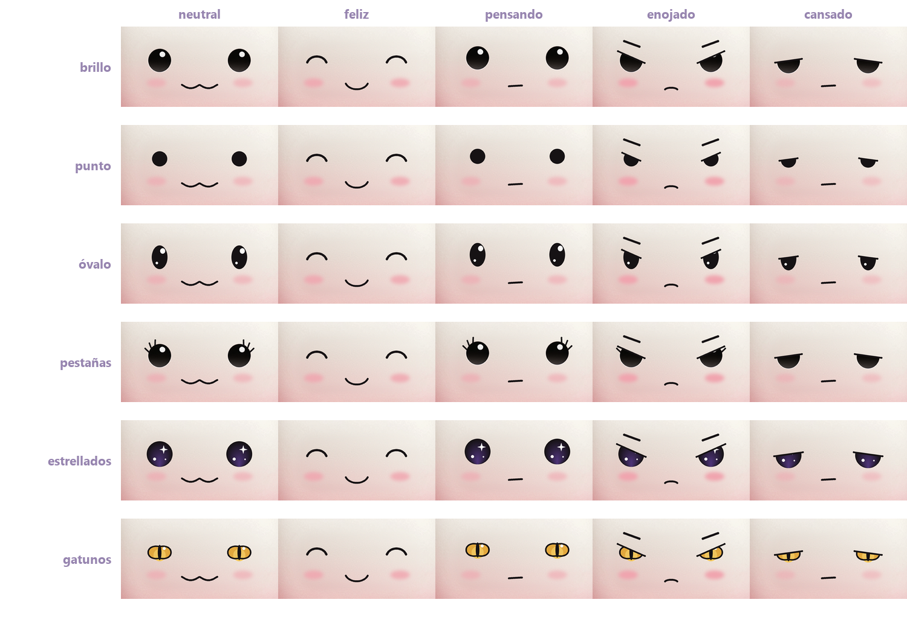
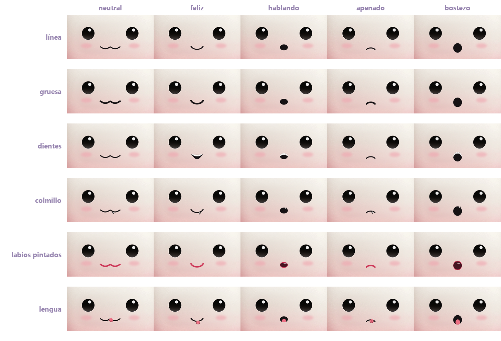
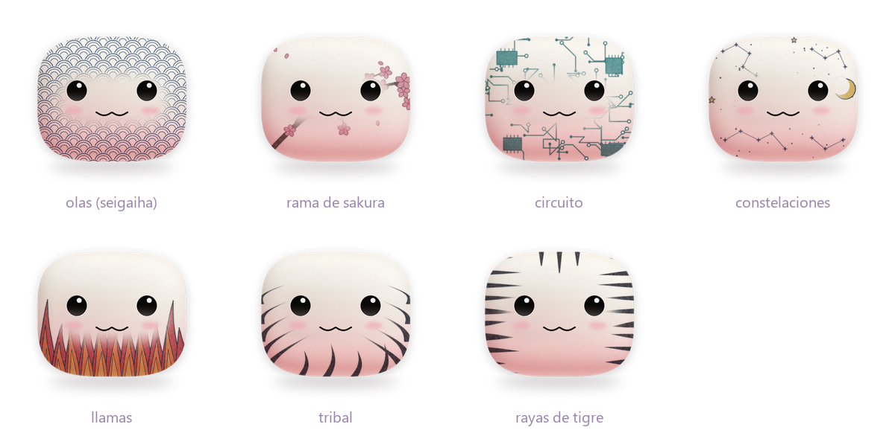
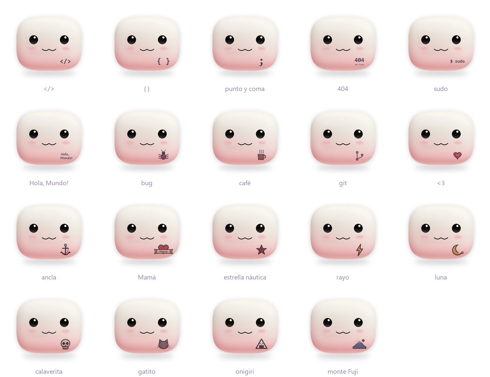
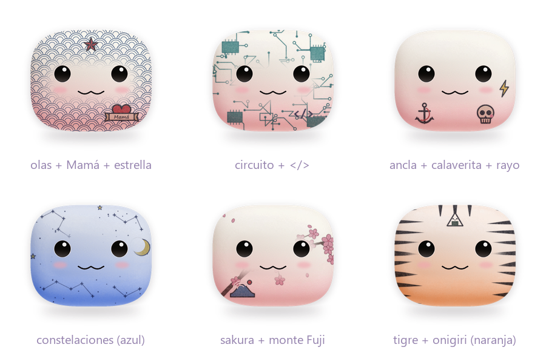
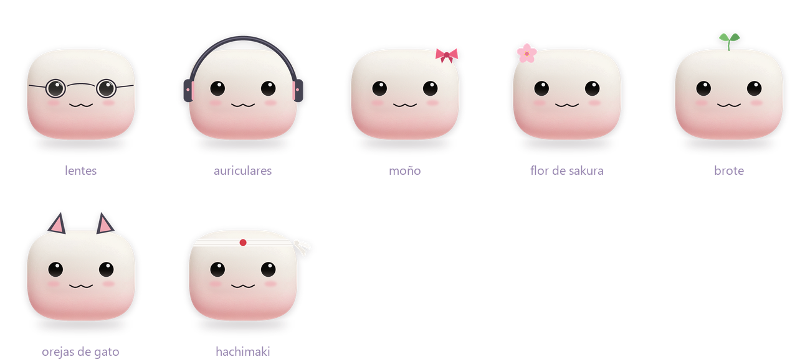
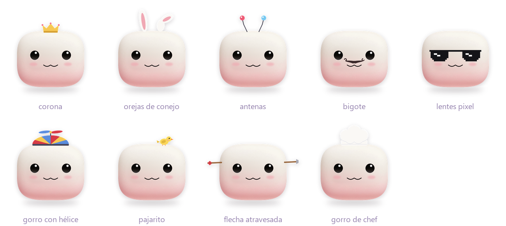
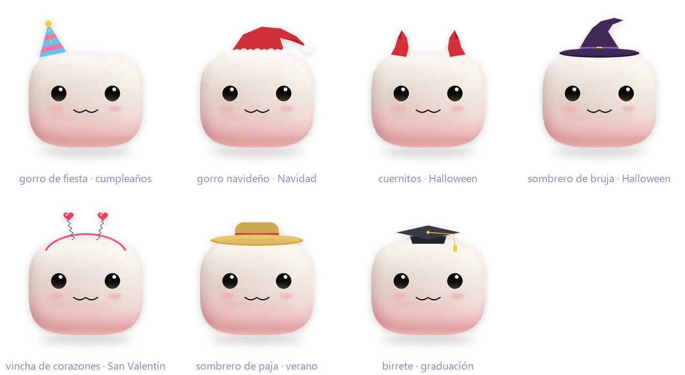

Cada emoción corresponde a un estado de la app (ver docs/PERSONAJE.md §3).
10 colores: primarios, secundarios y pasteles. Cambia el tono y se conservan el brillo y la textura del mochi.

6 estilos. Párpados, mirada y ojos cerrados funcionan con todos, así que todas las emociones sirven con cualquier ojo.

6 estilos. Todas las bocas siguen siendo un mismo contorno que se transforma, por eso los dientes, el colmillo, los labios y la lengua acompañan cada cambio de forma.

Tinta multiplicada sobre la piel (conserva textura y sombreado), con trazo irregular y un leve corrido. Se combinan: 1 patrón de cuerpo completo + hasta 3 diseños chicos.
Se desvanecen alrededor de la cara para que la expresión siempre se lea.

Van en 4 posiciones: panza derecha, panza izquierda, frente y costado.


23 accesorios. Pueden salir del contorno del cuerpo y siguen su escala, altura y rotación.


Se pueden poner solos en su fecha: Navidad, Halloween, San Valentín, verano, cumpleaños y graduación.

Combinaciones de color, ojos, boca, tatuaje y accesorio, animadas con la emoción "hablando".